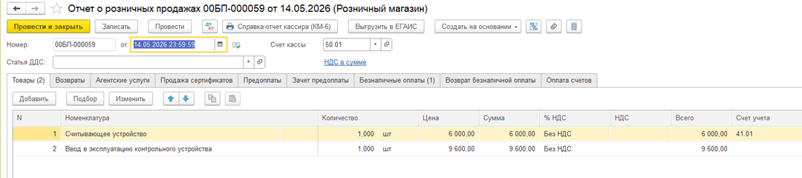
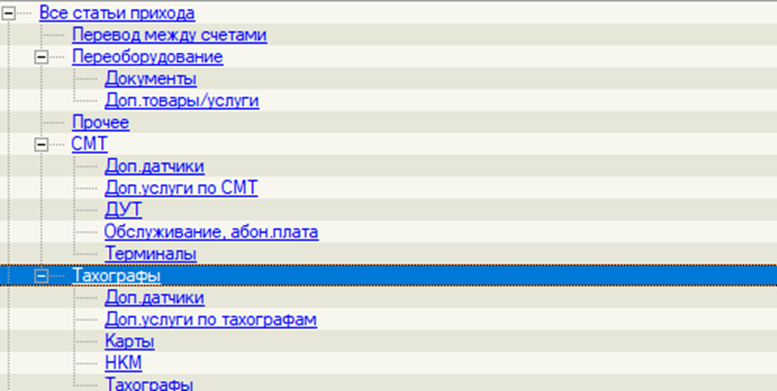
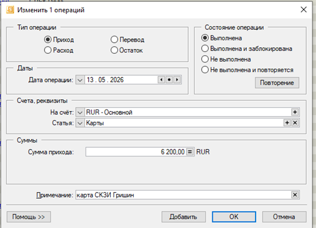
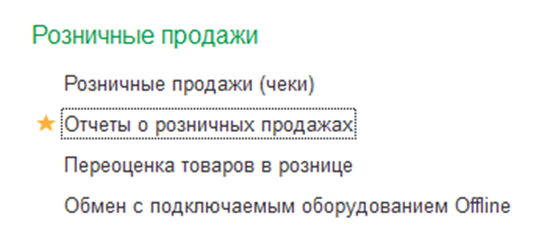
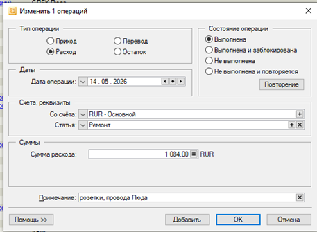

🎯 Цель модуля
Научить сотрудника безошибочно работать с кассовыми операциями, понимать внутренние процессы и лимиты компании, уверенно использовать терминалы оплаты и отражать данные в AbilityCash.
📜 Нормативная база
Порядок ведения кассовых операций в РФ регламентируется:
- Указание Банка России № 3210-У от 11.03.2014 г. (основной регламент).
- Указание ЦБ РФ № 4416-У от 19.06.2017 г. (упрощенный порядок для ИП и малого бизнеса).
- Внутренние регламенты компании по лимитам и ответственности.
💵 Приходный кассовый ордер (ПКО)
В 1С документ называется «Поступление наличных». Оформляется при любом поступлении денег в кассу.
Типовые операции:
- Оплата от покупателя / Розничная выручка
- Возврат от подотчетного лица или поставщика
- Получение наличных в банке (с расчетного счета)
- Расчеты по кредитам и займам
- Прочий приход

💸 Расходный кассовый ордер (РКО)
В 1С документ называется «Выдача наличных». Оформляется при любой выдаче денег из кассы.
Типовые операции:
- Оплата поставщику / Возврат денег покупателю
- Выдача под отчет (хоз. нужды, командировка)
- Выплата заработной платы (по ведомостям или отдельно)
- Взнос наличных в банк (инкассация)
- Выдача займа работнику

📖 Кассовая книга: правила ведения
Кассовая книга — это итоговый отчет за день. Если движения по кассе были — запись обязательна.


🏦 Лимит остатка кассы
Устанавливается в карточке организации согласно Указанию 3210-У.
В кассах Навикон/Парсек установлен лимит:

🧾 Навикон (Эквайринг Авангард)
Порядок действий при оплате картой:
🏪 Парсек (Терминал ВТБ)
Открыть смену
ВТБ Касса → Кассовые операции → Открыть кассовую смену.
Продажа
Выбор товаров/услуг → Выбор формы оплаты (Наличные/Карта).
Закрытие
Закрытие смены → Печать Z-Отчета → Справка КМ-6.

📊 Ведение наличной кассы бухгалтерии
Все движения наличных от менеджеров ОП фиксируются в чате Битрикс24 с расшифровкой.
📥 Приход ДС
Вносится по соответствующим статьям прихода на основании данных из чата.

📤 Расход ДС
Тип «Расход» с обязательным описанием суммы и цели платежа.



Соблюдайте точность до копейки!
Материал изучен
Вы готовы к работе с кассовыми операциями в 1С и AbilityCash.